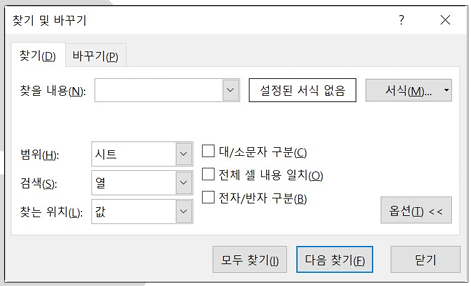
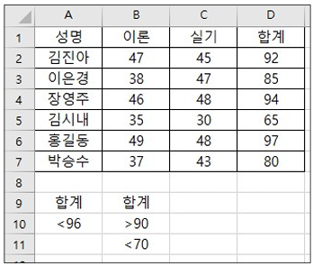
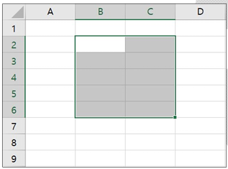

2026년 컴퓨터활용능력 2급 기출문제
제1과목 컴퓨터 일반
1. 다음 설명에 해당하는 프로그래밍 언어는?
• 인터프리터 방식으로 실행되는 언어이다.
• 다양한 라이브러리를 통해 빅데이터 분석 및 처리를 효율적으로 수행할 수 있다.
• 스크립트 언어로서, 간결하고 읽기 쉬운 문법을 제공하며, 자동화 작업에도 많이 사용된다.
• 다양한 라이브러리를 통해 빅데이터 분석 및 처리를 효율적으로 수행할 수 있다.
• 스크립트 언어로서, 간결하고 읽기 쉬운 문법을 제공하며, 자동화 작업에도 많이 사용된다.
[해설]
- 문제의 지문에 제시된 내용은 Python의 특징입니다.
- Perl도 인터프리터 및 스크립트 언어이지만 빅데이터 처리에 있어서는 Python만큼 효율적이지 않습니다.
- JAVA와 C#은 컴파일 방식으로 실행되는 언어입니다.
2. 다음 중 한글 Windows 10의 작업 표시줄 설정에 대한 설명으로 옳지 않은 것은?
[해설]
- 아이콘의 보기 형식이나 정렬 방식은 작업 표시줄 설정에서 지정할 수 없습니다. 바탕 화면의 바로 가기 메뉴를 이용해 설정합니다.
3. 다음 중 정보 보안을 위해 필요한 조치 방법으로 가장 거리가 먼 것은?
[해설]
- DNS(Domain Name System)는 도메인 네임을 IP 주소로 바꾸어 주는 시스템으로, DNS 설정을 변경한다고 해서 불법적인 접근을 방지할 수 있는 것은 아닙니다.
4. 다음 중 작업 표시줄의 바로 가기 메뉴에서 선택할 수 없는 항목은?
[해설]
- 작업 표시줄 바로 가기 메뉴에는 도구 모음, 뉴스 및 관심사, Cortana 표시, 작업 보기 단추 표시, 작업 표시줄에 피플 표시, Windows 잉크 작업 영역 단추 표시, 터치 키보드 단추 표시, 바탕 화면 보기, 작업 관리자, 작업 표시줄 잠금, 작업 표시줄 설정 등이 있으며, '개인 설정 표시' 항목은 없습니다.
5. 다음은 악성코드에 대한 설명이다. 옳지 않은 것은?
[해설]
- 웜(Worm)은 다른 프로그램 파일에 복사하는 것이 아니라, 스스로 자신을 독자적으로 복제하여 시스템의 부하를 높이는 독립형 악성코드입니다.
6. 다음 중 웹 브라우저의 기능에 관한 설명으로 옳지 않은 것은?
[해설]
- 웹 브라우저로 방문한 웹 사이트의 소스 코드를 열람할 수는 있으나 직접 편집하여 해당 원본 사이트에 반영시킬 수는 없습니다.
7. 다음 중 사물 인터넷(IoT)에 대한 설명으로 옳지 않은 것은?
[해설]
- IoT는 지속적인 통신 비용이 발생하며, 연결 디바이스 수가 대폭 증가함에 따라 정보 보안 기술의 적용이 까다롭고 취약성이 높아질 수 있습니다.
8. 다음 중 한글 Windows 10의 [메모장]에 대한 설명으로 옳지 않은 것은?
[해설]
- 메모장은 순수 텍스트 파일만을 다루는 텍스트 에디터이므로 그림, 차트, 글꼴 색상 등의 OLE 개체를 삽입할 수 없습니다.
9. 다음 중 컴퓨터의 연산 속도 단위로 가장 빠른 것은?
[해설]
- 연산 속도 단위를 빠른 것부터 차례대로 나열하면: 피코 초(ps, $10^{-12}$) > 나노 초(ns, $10^{-9}$) > 마이크로 초(μs, $10^{-6}$) > 밀리 초(ms, $10^{-3}$) 입니다.
10. 다음 중 컴퓨터 하드디스크의 연결 방식인 SATA(Serial ATA)에 관한 설명으로 옳지 않은 것은?
[해설]
- SATA는 직렬(Serial) 인터페이스 방식입니다. 병렬 방식은 IDE/PATA 방식에 해당합니다.
11. 다음 중 IPv6 주소체계에 대한 설명으로 옳지 않은 것은?
[해설]
- IPv6 주소는 각 부분을 콜론(:)으로 구분합니다. 세미콜론(;)이 아닙니다.
12. 다음 중 한글 Windows 10에서 프린터 설치에 관한 설명으로 옳지 않은 것은?
[해설]
- 표준 사용자 계정으로는 하드웨어 및 장치 드라이버 설치 권한이 제한될 수 있으며, 프린터 등의 외부 장치는 관리자 계정 권한이 필요합니다.
13. 다음 중 디지털 컴퓨터와 아날로그 컴퓨터의 차이점에 관한 설명으로 옳은 것은?
[해설]
- 아날로그 컴퓨터는 연속적인 수량(전류, 전압 등)을 처리하며 미·적분 연산을 주로 담당합니다.
- 디지털 컴퓨터는 이산적인 데이터(숫자, 문자 등)를 논리 회로로 처리하며 범용으로 사용됩니다.
14. 다음 중 정보 통신을 위한 디지털 방식의 통신 선로에서 전송 신호를 증폭하거나 재생하고 전달하는 중계 장치로 옳은 것은?
[해설]
- 리피터(Repeater)는 신호의 감쇠를 방지하기 위해 전송 신호를 증폭/재생하여 전달하는 중계 장치입니다.
15. 다음 중 한글 Windows 10의 [설정] → [접근성]에서 설정할 수 없는 기능은?
[해설]
- 다중 디스플레이 설정은 [시작] → [설정] → [시스템] → [디스플레이] 메뉴에서 설정합니다.
16. 다음 중 컴퓨터 범죄에 해당하지 않는 것은?
[해설]
- 인터넷 쇼핑몰 상품 가격 비교표 작성은 정상적인 정보 수집 활동으로 범죄에 해당하지 않습니다.
17. 다음 중 컴퓨터에서 사용하는 하드디스크의 파티션에 대한 설명으로 옳지 않은 것은?
[해설]
- 분할된 각 파티션에는 서로 다른 운영체제(예: Windows와 Linux 등)를 멀티 부팅 형태로 각각 독립하여 설치할 수 있습니다.
18. 다음 중 유틸리티 프로그램에 대한 설명으로 적절하지 않은 것은?
[해설]
- 유틸리티 프로그램은 컴퓨터 동작에 '필수적이지는 않으나' 사용자 편의를 도모하는 보조 프로그램입니다. 필수 소프트웨어는 운영체제(OS)입니다.
19. 다음 중 컴퓨터에서 사용되는 바이트(Byte)에 대한 설명으로 옳지 않은 것은?
[해설]
- 컴퓨터에서 명령을 처리하는 기본 단위는 워드(Word)입니다. 바이트(Byte)는 문자를 표현하는 기본 단위입니다.
20. 다음 중 아래에서 설명하는 그래픽 기법은?
컴퓨터 프로그램을 이용하여 3차원 애니메이션을 만드는 과정으로 사물 모형에 명암과 색상을 추가하여 사실감을 더해주는 작업이다.
[해설]
- 설명에 해당하는 기법은 렌더링(Rendering)입니다.
- 안티앨리어싱: 계단 현상을 부드럽게 보정.
- 인터레이싱: 이미지 대략적인 모습을 먼저 보여준 후 서서히 선명하게 표시.
제2과목 스프레드시트 일반
21. 다음 중 피벗 테이블에 대한 설명으로 옳지 않은 것은?
[해설]
- 원본 데이터가 변경되어도 피벗 테이블에 자동으로 반영되지 않으며, [새로 고침] 메뉴를 실행해야 업데이트됩니다.
22. 다음 중 수식에 잘못된 인수나 피연산자를 사용할 때 표시되는 오류 메시지로 옳은 것은?
[해설]
- #VALUE! : 잘못된 인수나 피연산자를 사용했을 때 발생합니다.
- #NUM! : 숫자가 유효 범위를 벗어났을 때 발생합니다.
- #NAME? : 인식할 수 없는 텍스트를 수식에 사용했을 때 발생합니다.
23. 다음 중 평균 매출량을 초과하는 지점의 개수를 구하는 수식으로 알맞은 것은?
| A | B | |
|---|---|---|
| 1 | 지점 | 매출량 |
| 2 | 인천 | 88 |
| 3 | 안양 | 75 |
| 4 | 안산 | 82 |
| 5 | 고양 | 65 |
| 6 | 일산 | 56 |
[해설]
- COUNTIF 함수 구문은
=COUNTIF(범위, 조건)입니다. - 조건에 함수 표현식을 포함할 때는 비교 연산자와 함수를 엠퍼센트(&)로 연결해야 제대로 인식됩니다. (예:
">" & AVERAGE(B2:B6))
24. 다음 중 각 차트에 대한 설명으로 옳지 않은 것은?
[해설]
- 꺾은선형 차트는 여러 계열을 나타낼 수 있으며 3차원 꺾은선형 차트로도 표현 가능합니다. (원형 차트는 단일 계열만 표현 가능)
25. 다음 중 참조의 대상 범위로 사용하는 이름에 대한 설명으로 옳은 것은?
[해설]
- 이름 정의는 기본적으로 절대 참조 방식($A$1)을 사용합니다.
- 첫 글자는 숫자를 사용할 수 없고 문자나 밑줄(_)이어야 합니다.
- 통합 문서 범위 내에서는 중복 이름을 사용할 수 없습니다.
- 대소문자를 구분하지 않습니다.
26. 다음 중 이미 부분합이 계산되어 있는 상태에서 새로운 부분합을 추가하고자 할 때 수행해야 할 작업으로 옳은 것은?
[해설]
- 이전 부분합 결과를 유지하면서 중첩하여 새로운 부분합을 추가하려면 '새로운 값으로 대치' 체크박스를 해제해야 합니다.
27. 다음 중 채우기 핸들에 대한 설명으로 옳은 것은?
[해설]
- 문자+숫자 셀을 그냥 드래그하면 숫자가 1씩 증가하지만, [Ctrl]을 누르고 드래그하면 내용이 복사됩니다.
- ② 두 숫자의 차이만큼 증가/감소하여 채워집니다.
- ③ 오른쪽 드래그 시 1씩 증가합니다.
- ④ 사용자 지정 목록에서 [Ctrl]을 누르고 드래그하면 동일 항목 복사가 일어납니다.
28. 다음 중 데이터 관리 기능인 자동 필터에 대한 설명으로 옳지 않은 것은?
[해설]
- 자동 필터는 여러 필드에 동시 적용하여 AND 조건을 지정할 수 있습니다.
29. 다음 중 워크시트 작업 및 관리에 대한 설명으로 옳지 않은 것은?
[해설]
- 열 머리글 경계선을 더블클릭하면 기본값이 아니라 입력된 가장 긴 데이터 길이에 맞춰 자동 맞춤 처리됩니다.
30. 다음 중 아래의 '매크로' 대화상자에 대한 설명에서 괄호 안에 들어갈 용어로 옳은 것은?
'매크로' 대화상자의 ( ) 단추는 바로 가기 키나 설명을 변경할 수 있고, ( ) 단추는 매크로 이름이나 명령 코드를 수정할 수 있다.
[해설]
- [옵션] 단추: 바로 가기 키 및 설명 수정.
- [편집] 단추: VBA 창이 열리며 이름 및 코드 수정.
31. 다음 중 페이지 나누기에 대한 설명으로 옳지 않은 것은?
[해설]
- 행 높이나 열 너비를 조정하면 용지 1페이지에 들어가는 셀 수가 달라지므로 자동 페이지 나누기 구분선의 위치가 동적으로 변경됩니다.
32. 다음 중 [찾기 및 바꾸기] 대화상자의 각 항목에 대한 설명으로 옳지 않은 것은?

[해설]
- '서식' 버튼을 이용하면 텍스트뿐만 아니라 숫자가 들어있는 셀의 특정 표시 형식이나 지정 서식도 함께 찾아낼 수 있습니다.
33. 다음 중 데이터가 입력된 셀에서 [Delete]를 눌렀을 때의 상황에 대한 설명으로 옳지 않은 것은?
[해설]
- [Delete] 키는 셀의 '내용'만 지우며, 셀에 지정된 테두리, 배경색, 글자 색 등의 '서식'과 '메모/노트'는 유지됩니다.
34. 다음 중 한자와 특수문자 입력에 대한 설명으로 옳지 않은 것은?
[해설]
- 특수문자를 입력할 때는 한글 '자음(ㅁ, ㄴ, ㅇ 등)'을 입력하고 [한자] 키를 눌러야 특수문자 목록 창이 나타납니다. 모음 입력 후에는 작동하지 않습니다.
35. 다음 중 아래 그림의 표에서 조건 범위로 [A9:B11] 영역을 선택하여 고급 필터를 실행한 결과의 레코드 수는 얼마인가?

[해설]
- 조건 해석: [합계가 96 미만이고 90 초과] OR [합계가 70 미만]
- 1) 합계 < 96 이고 > 90 인 데이터: 김진아(92), 장영주(94) → 2개
- 2) 합계 < 70 인 데이터: 김시내(65) → 1개
- 따라서 추출되는 총 레코드 수는 3개입니다.
36. 다음 중 [페이지 설정] 대화상자의 [시트] 탭에 대한 설명으로 옳지 않은 것은?
[해설]
- '용지 여백'은 [여백] 탭에서, '용지 크기'는 [페이지] 탭에서 설정합니다.
37. 아래 워크시트에서의 작업에 대한 설명으로 옳지 않은 것은?

[해설]
- [Enter]는 셀 포인터를 아래로 이동시키고, [Shift]+[Enter]는 역방향인 위쪽([B1])으로 이동시킵니다.
38. 다음 중 새 워크시트에서 보기의 내용을 그대로 입력하였을 때, 입력한 내용이 텍스트로 인식되지 않는 것은?
[해설]
- `0 1/4` (0과 한 칸 띄우고 1/4)는 엑셀에서 분수 데이터(수치)로 인식됩니다.
- '1234는 접두어(')로 인해 텍스트로 입력됩니다.
39. 다음 중 틀 고정 및 창 나누기에 대한 설명으로 옳지 않은 것은?
[해설]
- 창 나누기 구분선을 제거하려면 [보기] → [창] → [나누기]를 다시 클릭하거나 구분선을 마우스로 더블클릭합니다. [숨기기]는 통합 문서 창을 숨기는 기능입니다.
40. 다음 중 매크로에 관한 설명으로 옳지 않은 것은?
[해설]
- 하나의 통합 문서 내에서는 시트가 달라도 동일한 이름을 가진 매크로를 중복하여 생성할 수 없습니다.